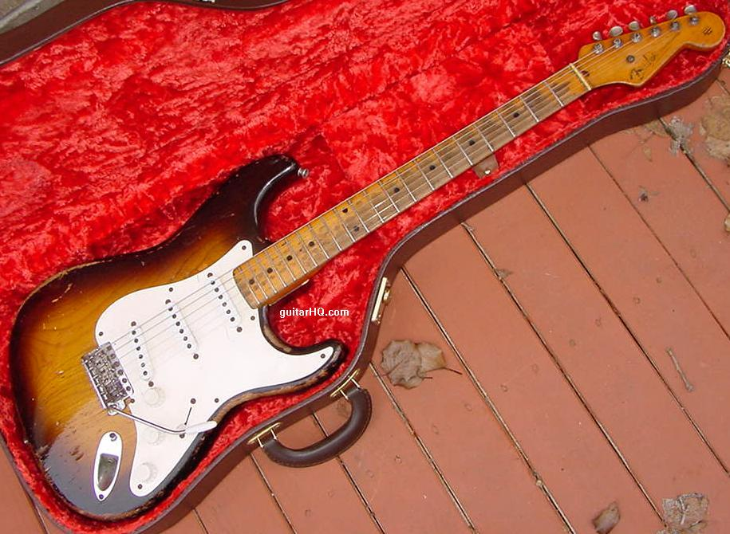
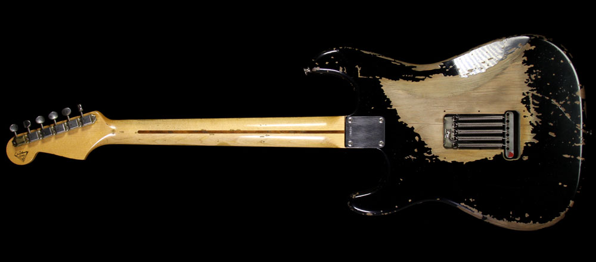
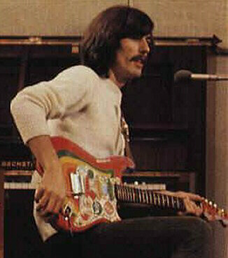
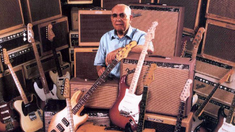

Fender Stratocaster
HISTORY
The Fender Stratocaster was the first guitar to feature three pickups and a spring tension tremolo system, as well as being the first Fender with a contoured body. The Stratocaster's sleek, contoured body shape (officially referred to by Fender as the "Comfort Contour Body" differed from the flat, slab-like design of the Telecaster. The Stratocaster's double cutaways allowed players easier access to higher positions on the neck.
Starting in 1954, the Stratocaster was offered with a solid, deeply contoured ash body, a 21-fret one-piece maple neck with black dot inlays, and Kluson tuning heads. The color was originally a two color sunburst pattern, although custom color guitars were produced (most famously Eldon Shamblin's gold Stratocaster, dated 6/1954). In 1956, Fender began using alder for sunburst and most custom color Stratocaster bodies; ash was still used on translucent blonde instruments. In 1960, the available custom colors were standardized, many of which were automobile lacquer colors from DuPont available at an additional 5% cost. A unique single-ply, 8-screw hole white pickguard held all electronic components except the recessed jack plate—facilitating easy assembly.
Original Stratocasters were shipped with five springs anchoring the bridge flat against the body. Some players removed the backplate covering the bridge to remove two of the springs and adjust the claw screws to allow the bridge to 'float,' with the pull of the strings in one direction countering the pull of the springs in the opposite direction. In this floating position, players could move the bridge-mounted tremolo arm up or down to modulate the pitch of the notes being played. Hank Marvin, Jeff Beck and Ike Turner used the Strat's floating tremolo extensively in their playing. However, other players, such as Eric Clapton and Ronnie Wood, disliked the floating bridge's propensity to detune guitars and inhibited the bridge's movement with a chunk of wood wedged between the bridge block and the inside cutout of the tremolo cavity and by increasing the tension on the tremolo springs. These procedures lock the bridge in a fixed position. Some Strats have a fixed bridge in place of the tremolo assembly; these are colloquially called "hard-tails".
The Stratocaster features three single coil pickups, with the output originally selected by a 3-way switch. Guitarists soon discovered that by jamming the switch in between the 1st and 2nd position, both the bridge and middle pickups could be selected, and similarly, the middle and neck pickups could be selected between the 2nd and 3rd position. In 1977 Fender introduced a 5-way selector making such pickup combinations more stable.
The "quacky" tone of the middle and bridge pickups, popularized by players such as David Gilmour, Rory Gallagher, Mark Knopfler, Bob Dylan, Scott Thurston, Ronnie Wood, Ed King, Eric Clapton and Robert Cray, can be obtained by using the pickup selector in positions 2 and 4. The neck and middle pickups are each wired to a tone control that incorporates a single, shared tone capacitor, whereas the bridge pickup, which is slanted towards the high strings for a more trebly sound, has no tone control for maximum brightness . On many modern Stratocasters, the first tone affects the neck pickup; the second tone affects the middle and bridge pickups; on some Artist Series models (Eric Clapton and Buddy Guy signature guitars), the first tone is a presence circuit that cuts or boosts treble and bass frequencies, affecting all the pickups; the second tone is an active midrange booster that boosts the midrange frequencies up to 25 dB (12 dB on certain models) to produce a fatter humbucker-like sound.
Dick Dale is a prominent Stratocaster player, who also collaborated with Leo Fender in developing the Fender Showman amplifier. In the early 1960s, the instrument was also championed by Hank Marvin–guitarist for the Shadows, a band that originally backed Cliff Richard and then produced instrumentals of its own. In 1965, George Harrison and John Lennon acquired Stratocasters and used them for Help!, Rubber Soul and later recording sessions; the double unison guitar solo on "Nowhere Man" i s played by Harrison and Lennon on their new Stratocasters.
After the introduction of the Fender Stratocaster Ultra series in 1989, ebony was officially selected as a fretboard material on some models (although several Elite Series Stratocasters manufactured in 1983/84 such as the Gold and Walnut were available with a stained ebony fretboard). In December 1965 the Stratocaster was given a broader headstock with altered decals to match the size of the Jazzmaster and the Jaguar.
Leo Fender
